Définitions des rôles¶
Ressource¶
Les ressources d’un projet peuvent être humaines ou matérielles. La disponibilité des ressources est définie en les affectant à un projet.
Les ressources sont nécessaires à la planification du projet
Une ressource peut être un groupe de personnes
ou une ressource fictive avec un ETP > 1
Voir aussi
Équivalent Temps Plein¶
ETP signifie « équivalent temps plein ». C’est le nombre d’heures travaillées par un seul employé en une journée.
1 ETP (équivalent temps plein)
< 1 pour une ressource à temps partiel ou des variations de capacité
> 1 pour des ressources virtuelles ou des équipes, un réservoir de ressources ou des variations de capacité
Note
Si vous souhaitez un réservoir de ressources de trois personnes, la capacité ETP doit être définie à 3
Travail maximum
Vous pouvez définir une valeur maximale au-delà de laquelle aucune charge ne peut être saisie.
Par exemple, pouvoir définir qu’un utilisateur ne peut pas saisir plus de 12 heures par jour.
Vous pouvez définir une limite par jour et une limite par semaine.
La ressource ne pourra pas saisir plus que le nombre d’heures autorisé sur ses feuilles de temps.
Voir : Saisie du travail réel
Champ est un contact
Cochez ceci si la ressource doit également être un Contacts.
La ressource apparaîtra alors également dans la liste « Contacts ».
Champ est un utilisateur
Cochez ceci si la ressource doit se connecter à l’application.
Vous devez alors définir les champs Nom d’utilisateur et Profil.
La ressource apparaîtra alors également dans la liste Utilisateurs.
Champ est un employé
Cochez cette case si la ressource doit être liée au module des ressources humaines.
La ressource apparaîtra alors également dans la liste Paramètres environnementaux.
Allocations aux projets
Cette zone permet d’allouer les ressources au projet.
Cliquez sur
 pour allouer une nouvelle ressource au projet.
pour allouer une nouvelle ressource au projet.Cliquez sur
 pour mettre à jour un coût de ressource existant.
pour mettre à jour un coût de ressource existant.Cliquez sur
 pour supprimer le coût de ressource.
pour supprimer le coût de ressource.

Ressource affectée au projet¶
Variations de la capacité des ressources¶
Vous pouvez enregistrer des dates (début et fin) pour indiquer que la capacité (ETP) de votre ressource va varier pendant cette période.
Cela vous permet de réserver et de saisir du temps de travail supplémentaire (heures supplémentaires) ou de retirer des heures à la capacité standard (récupération).
La ressource saisira alors ses imputations, la valeur exacte de sa capacité variable pour la période donnée. 1 + XX heures pour que le statut du jour passe au vert
La surcapacité d’une ressource est directement visible sur le diagramme de Gantt.
Une fine bande rouge surmonte les barres d’allocation de travail de la ressource et vous trouverez la capacité exacte ajoutée à la fin du détail de la ressource.
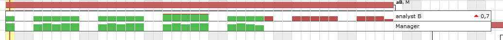
Variations de la capacité¶
Gestion des périodes de surbooking¶
Le surbooking en planification vous permet d’ajouter du temps de travail supplémentaire sur les capacités standard de vos ressources pour planifier davantage de projets que vous ne traiterez pas.
Vous pouvez également soustraire ce temps de travail pour ne pas planifier toute la disponibilité des ressources.
La ressource continuera à déclarer ses charges normalement, sans temps de travail supplémentaire ou réduit, pour passer le statut de sa journée au vert.
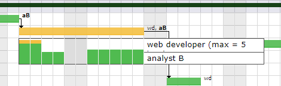
Variations de la capacité¶
Avertissement
la capacité variable et le surbooking ne se comportent pas de la même manière.
La capacité variable sera davantage utilisée pour contrôler et enregistrer les périodes d’heures supplémentaires réelles et le comportement des imputations sera adapté à cette capacité.
le surbooking est une façon de planifier dans le futur sans interagir avec le comportement du temps de travail des ressources
Zone fonction et coût¶
Cette section permet de définir les fonctions et le coût de la ressource.
update-resource-cost

Zone fonction et coût¶
Fonction principale
La fonction principale vous permet de saisir les fonctions par défaut qui seront utilisées dans les affectations des activités.
Une ressource peut avoir plusieurs fonctions et des coûts différents selon la fonction.
Un coût est proposé par défaut si vous avez saisi les coûts dans la liste des valeurs - Fonctions.
Ce coût peut être modifié à tout moment depuis le tableau des fonctions de l’écran des ressources, ou avec la ressource Mise à jour du coût des ressources
Définition du coût des ressources
Permet de définir le coût journalier selon les fonctions de la ressource.
Le coût journalier peut être défini pour une période spécifique.
Champ |
Description |
|---|---|
Fonction |
Fonction de la ressource pour le coût sélectionné. |
Coût |
Coût journalier de la ressource pour la fonction sélectionnée. |
Date de début |
Date de début pour le coût de la ressource, pour la fonction sélectionnée. |
Date de fin |
Date de fin pour le coût de la ressource, pour la fonction sélectionnée. |
Gestion du coût des ressources
Cliquez sur
pour créer un nouveau coût de ressource.Cliquez sur
pour mettre à jour un coût de ressource existant.Cliquez sur
pour supprimer le coût de ressource.
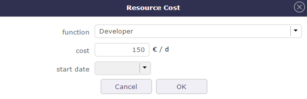
Boîte de dialogue du coût de ressource¶
Champ |
Description |
|---|---|
Fonction |
Fonction à sélectionner. |
Coût |
Coût journalier de la ressource pour la fonction sélectionnée. |
Date de début |
Date de début pour le coût de la ressource, pour la fonction sélectionnée. |
Champ |
Description |
|---|---|
Ne pas recevoir les mails de l’équipe |
Case cochée indiquant que la ressource ne souhaite pas recevoir les mails envoyés à l’équipe. |
Ressources incompatibles¶
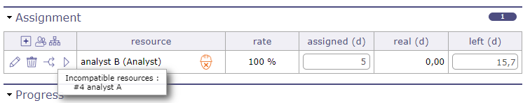
Affectation avec ressource incompatible¶
Deux ressources A et B sont incompatibles.
Si A est planifié à un moment donné, B ne peut pas être planifié le même jour que pour une charge inférieure ou égale à la disponibilité restante à ce jour,
c’est-à-dire le minimum de [capacité de la ressource - charge déjà planifiée] pour chaque ressource incompatible et réciproquement, la relation étant bijective.
Ressources de support¶
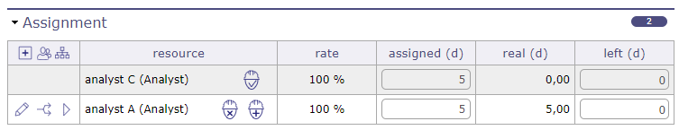
Affectation avec ressource incompatible¶
Si la ressource B est la ressource de support de la ressource A, si A est planifié à un moment donné, B doit également être automatiquement planifié au prorata indiqué comme taux d’emploi dans la définition de la ressource de support.
Si la ressource de support B de A n’est pas disponible (en partie ou totalement), on planifie pour A uniquement la partie disponible en tenant compte du taux d’emploi.
L’affichage de la charge planifiée pour la ressource de support, bien qu’elle ne soit pas affectée à l’activité, est visible dans le détail d’un clic droit sur la barre Gantt.
Autres¶
Actif alloué
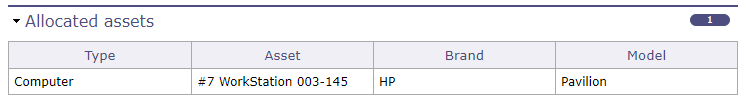
Actif alloué¶
Cette section vous permet de voir tout l’équipement connecté à la ressource sous forme de tableau simple.
Chaque ligne d’équipement est cliquable et dirige vers l’écran de l’élément.
Voir : Gestion des actifs
Réservoir de ressources¶
Un réservoir est un groupe de ressources qui peuvent travailler comme n’importe laquelle des ressources affectées.
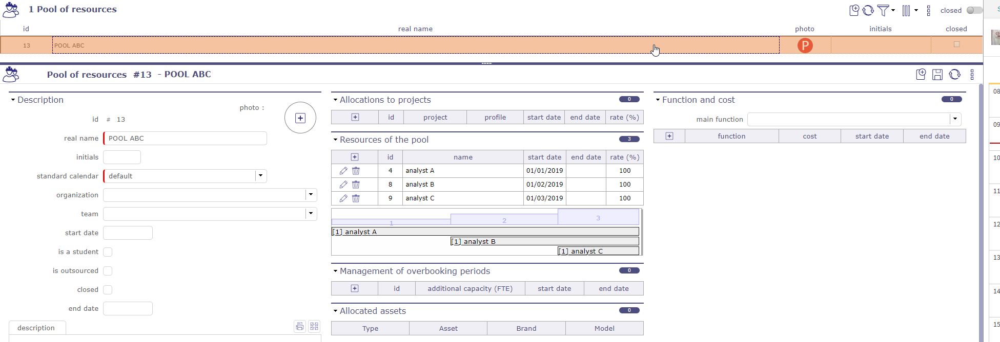
Écran du réservoir de ressources¶
Les cas d’utilisation d’un réservoir de ressources peuvent être nombreux :
Lorsque vous avez un groupe de ressources pouvant travailler sur les mêmes tâches, mais que vous ne savez pas à l’avance qui travaillera. Par exemple, une équipe de maintenance pouvant travailler sur des tâches de maintenance et d’autres tâches de projet.
Pour la planification macro.
Définissez un réservoir pour chaque groupe de ressources (en fonction par exemple des compétences).
Dans un premier temps, affectez des ressources fictives aux réservoirs et planifiez votre projet avec les réservoirs : vous obtenez une première ébauche de votre projet, même avant de savoir qui travaillera sur le projet, et sans avoir besoin d’aller à un niveau très détaillé de tâches (c’est une planification macro, vous n’avez que des macro-tâches).
Ensuite, lorsque vous savez qui travaillera sur le projet : remplacez simplement la ressource fictive par de vraies ressources : vous obtenez immédiatement une planification réaliste tenant compte de la disponibilité des vraies ressources déjà réservées sur d’autres projets. C’est toujours une planification macro, mais réaliste.
Ensuite, vous pouvez établir votre planification détaillée, en ajoutant simplement des sous-activités à vos macro-tâches et en affectant de vraies ressources aux activités de niveau inférieur : lorsque vous ajoutez du travail affecté, il est automatiquement soustrait du travail affecté sur le réservoir de la macro-tâche, et le travail affecté global sur le projet est constant.
Planification¶

Vous affectez des ressources au réservoir à un taux donné pour une période donnée.
Un réservoir peut être alloué à des projets comme n’importe quelle ressource.
Un réservoir peut être affecté à des activités comme des ressources. La différence est que lorsque vous affectez un réservoir, vous ne spécifiez pas le taux mais l’ETP (Équivalent Temps Plein) affecté à l’activité. Cela signifie le nombre de ressources pouvant travailler simultanément sur l’activité.
Un réservoir n’a pas de capacité spécifique. Sa capacité maximale est calculée à partir de la capacité et du taux des ressources qui le composent.
Lors de la planification d’un réservoir, la disponibilité des ressources unitaires déjà réservées sur d’autres tâches est prise en compte.
Lors de la planification d’une ressource unitaire, la disponibilité déjà réservée via le réservoir sur d’autres tâches est également prise en compte (globalement pour toutes les ressources du réservoir).
Taux et ETP
Une ressource ne peut pas être affectée à des réservoirs pour plus de 100 % sur une période donnée.
Une ressource, si affectée sur 2 réservoirs. C’est la fraction de l’ETP de la ressource.
Une ressource avec un ETP de 1, si affectée à 50 % sur un réservoir, ne sera planifiée qu’à un maximum de 0,5 par jour.
Une ressource à 20 % ne sera planifiée qu’à hauteur de 0,2 de son ETP par jour…
Décrémentation automatique du travail affecté
Lorsque vous affectez un réservoir à une activité, puis affectez une ressource du réservoir à la même activité, le travail affecté sur la ressource est automatiquement soustrait de l’affectation du réservoir.
De même, lorsque vous affectez un réservoir à une activité, puis affectez une ressource du réservoir à une sous-activité de cette activité, le travail affecté sur la ressource est automatiquement soustrait de l’affectation du réservoir.
Lorsque vous affectez un réservoir à une activité, puis affectez le même réservoir à une sous-activité de cette activité, le travail affecté sur le réservoir dans la sous-activité est automatiquement soustrait de l’affectation du réservoir dans l’activité parent.
Lors de la suppression d’une affectation, le travail restant est réaffecté dans le réservoir.
Lorsqu’une ressource fournit du travail sur une activité sans travail restant, mais sur la même activité il y a une allocation pour un réservoir de la ressource affectée à la même fonction, le travail restant sur le réservoir est décrémenté.
C’est une option dans les paramètres globaux
Important
Limites d’un réservoir de ressources
Un réservoir ne peut pas être un utilisateur et n’a pas de profil car il ne peut pas se connecter à l’application.
Un réservoir ne peut pas être un contact
Un réservoir ne peut pas être le responsable d’un élément
Vous pouvez choisir comment le réservoir et ses ressources peuvent être alloués et affectés. Voir : Allocation du réservoir de ressources
Ressource agrégée¶
La ressource agrégée vous permet de choisir une seule ressource dans un réservoir de ressources.
Lorsque vous affectez un réservoir de ressources à une activité, une case à cocher apparaît : ressource unique.
Si vous sélectionnez ressource unique, vous n’aurez pas de capacité ETP à renseigner mais un taux d’occupation sur l’activité.
Cochez la case et confirmez pour fermer la fenêtre contextuelle.
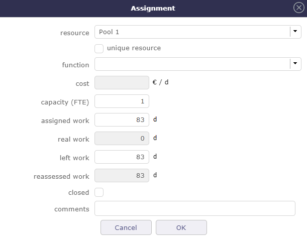
Lorsque le réservoir est alloué, l’icône du réservoir apparaît sur le tableau.
Si vous avez choisi la ressource unique, le chiffre 1 sera affiché sur l’icône.
De même, la fonction de la ressource choisie dans le réservoir est indiquée entre parenthèses.

Cliquez sur pour modifier l’allocation.
La fenêtre contextuelle s’ouvre à nouveau et cette fois vous avez le tableau récapitulatif vous montrant les ressources de votre réservoir
et les dates auxquelles chaque ressource peut ou devrait terminer l’activité.
Vous devez renseigner la charge de l’activité pour voir les dates de fin des ressources du réservoir.
Sinon le message “travail non planifié” apparaît à la place des dates.

Choisissez la ressource appropriée en sélectionnant la ligne correspondante et confirmez.
Par défaut, ProjeQtOr sélectionnera automatiquement la ressource la plus rapide pour terminer la tâche.
La ressource sélectionnée sera alors la seule à être planifiée sur cette activité depuis le réservoir.
Équipes¶
L’équipe est un groupe de ressources regroupées selon n’importe quel critère.
Une ressource ne peut appartenir qu’à une seule équipe.
Membres de l’équipe
Liste des ressources membres de l’équipe.
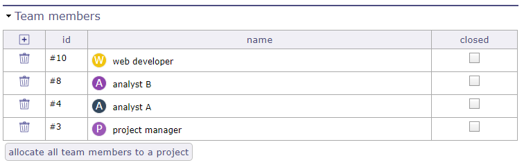
Section membres de l’équipe¶
Cliquez sur
pour ajouter un ou plusieurs membres à l’équipeUtilisez
 dans la fenêtre contextuelle pour rechercher des ressources spécifiques
dans la fenêtre contextuelle pour rechercher des ressources spécifiquesCliquez sur
pour supprimer le membre de l’équipe
Ressources matérielles¶
Il est possible de créer une ressource « matérielle » afin qu’elle puisse être réservée avec du travail.
Ce travail ne sera pas ajouté au projet. En revanche, si cette ressource a un coût, il est ajouté.
Cette ressource matérielle sera planifiée comme une ressource humaine avec une capacité (ETP) de 1 que vous ne pourrez pas modifier.
Les propriétés de ressources humaines pour la surcapacité et le surbooking ne sont pas disponibles pour ce type de ressource.
Cependant, une ressource matérielle peut avoir une ressource de support ou supportée ou une ressource incompatible.
Par exemple, une remorque pourrait soutenir un camion. Ou une voiture automatique peut être incompatible avec une ressource qui ne sait pas conduire ce type de voiture.
Une ressource matérielle ne peut pas faire partie d’un réservoir de ressources. Cela est réservé aux ressources humaines.
Une ressource matérielle peut être attachée à une organisation.
Utilisateurs¶
L’utilisateur est une personne qui pourra se connecter à l’application.
Avertissement
Pour pouvoir se connecter, l’utilisateur doit avoir un mot de passe et un profil utilisateur définis.
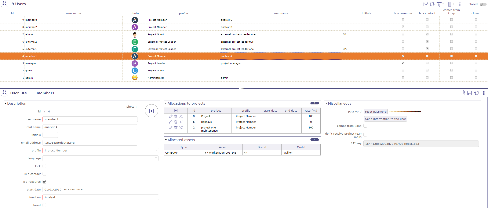
Écran utilisateur¶
Utilisateurs ProjeQtOr et LDAP¶
ProjeQtOr propose trois modes d’authentification.
Utilisateurs ProjeQtOr
Les informations des utilisateurs sont conservées dans la base de données de l’application.
La politique de mot de passe et le comportement de connexion sont gérés par l’application.
Voir : Utilisateur et mot de passe
Note
Les utilisateurs « admin » et « guest » sont créés lors de l’installation.
Le nom d’utilisateur doit être unique.
Utilisateurs LDAP
Permet aux utilisateurs définis dans un annuaire externe de se connecter à ProjeQtOr via le protocole LDAP.
Les informations des utilisateurs et la politique de mot de passe sont gérées dans l’annuaire externe.
pour chaque utilisateur provenant d’un LDAP, le mot « vient de Ldap » sera affiché à côté du nom de l’utilisateur avec possibilité de modification selon les droits de l’utilisateur connecté
Voir : Paramètres de gestion LDAP
Utilisateurs SSO
Permet aux utilisateurs de se connecter à ProjeQtOr via le protocole SSO.
Définissez l’ID d’entité, le certificat IDP, la connexion et la déconnexion uniques, etc.
Message d’information sur la création d’un nouvel utilisateur depuis SAML
Les informations utilisateur et la politique de mot de passe sont gérées par votre solution SSO.
Profil utilisateur par défaut
Un profil utilisateur par défaut est défini lors de la création de l’utilisateur.
Un profil par défaut différent peut être défini selon le mode d’authentification.
Service Web
ProjeQtOr fournit une API pour interagir avec ses éléments. Elle est fournie en tant que service Web REST.
Une clé API est définie pour l’utilisateur.
Cette clé API est utilisée pour chiffrer les données pour les méthodes : PUT, PUSH et DELETE.
Actif alloué
Cette section vous permet de voir tout l’équipement connecté à l’utilisateur sous forme de tableau simple.
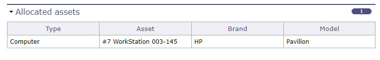
Actif alloué pour l’utilisateur sélectionné¶
Chaque ligne d’équipement est cliquable et dirige vers l’écran de l’élément.
Voir : Gestion des actifs
Section Divers
Champ |
Description |
|---|---|
Ne pas recevoir les mails de l’équipe |
Case cochée indiquant que la ressource ne souhaite pas recevoir les mails envoyés à l’équipe. |
Provient de LDAP |
Case cochée indiquant que les informations de l’utilisateur proviennent de LDAP. |
Clé API |
Chaîne de clé utilisée par le consommateur du service Web. |
Contacts¶
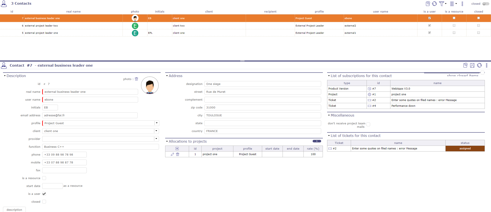
Écran des contacts¶
Un contact est une personne ayant une relation d’affaires avec l’entreprise.
L’entreprise conserve toutes les informations pour pouvoir le contacter en cas de besoin.
Un contact peut être une personne dans l’organisation client.
Un contact peut être la personne de contact pour les contrats, les ventes et la facturation.
Voir : Ressource Contact Utilisateur
Section Allocations au projet
Permet d’allouer votre contact à un projet
voir : Allocations
Section Liste des abonnements pour ce contact
Vous pouvez voir les éléments suivis par votre contact dans cette section
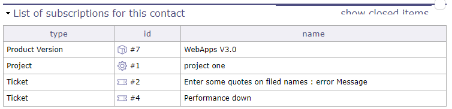
liste des éléments suivis par votre contact¶
Section Divers
si la case est cochée, le contact ne recevra pas les mails envoyés à l’équipe
Calendriers¶
Cet outil permet de définir des calendriers.
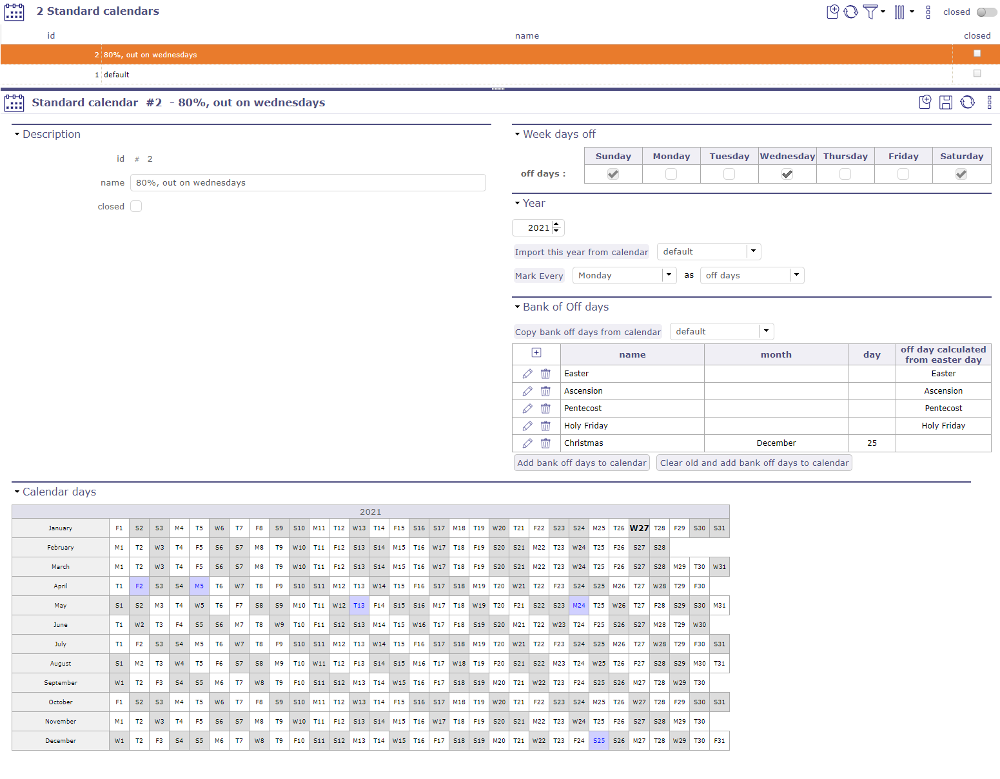
Il permet de définir des exceptions à la définition par défaut.
Dans la définition par défaut, les jours de semaine sont des jours de travail et les jours de week-end sont des jours de congé.
Vous pouvez modifier le calendrier standard ou créer d’autres calendriers en permettant à n’importe quel jour de la semaine d’être un jour férié
Note
Des exceptions peuvent être définies pour l’année en cours et les années suivantes.
Calendrier par défaut
Un calendrier nommé « défaut » est déjà défini. Les jours de congé définis dans ce calendrier sont affichés dans le Gantt, l’allocation du travail réel et le journal. Par défaut, les jours de week-end sont indiqués comme jours non ouvrés et ne peuvent pas être décochés via les calendriers. Vous devez aller dans les paramètres globaux > section temps de travail > Jour ouvert et sélectionner votre choix (activé ou désactivé) dans la liste déroulante en face du jour. Le calendrier par défaut ne peut pas être supprimé.
Un calendrier spécifique peut être créé pour définir les jours de congé et de travail d’une ressource particulière.
Il est possible d’importer la définition des exceptions d’un calendrier dans un autre.
Vous pouvez également importer les jours fériés
Les exceptions existantes du calendrier actuel ne sont pas modifiées.
Note
Les calendriers ne sont pas liés.
Vous devez réimporter la définition pour appliquer les modifications.
Banque de jours de congé
Définition de la banque de jours fériés qui peut être facilement ajoutée chaque année.

Cliquez sur pour créer un jour férié

Jours de congé de la banque¶
Une fenêtre contextuelle s’ouvre et vous pouvez définir le jour de congé
Jours de la semaine de congé
Par défaut, le samedi et le dimanche sont des jours non ouvrés
Cochez les cases correspondant aux jours non ouvrés si les paramètres par défaut ne conviennent pas à la structure de votre entreprise
Année
Sélectionnez l’année du calendrier à créer.
Champ Année
Créez le calendrier à partir de l’année spécifiée avec toutes les fonctionnalités du calendrier appelé.
Bouton Importer cette année depuis le calendrier
Copiez les exceptions de l’année sélectionnée du calendrier sélectionné dans le calendrier actuel.
Jours du calendrier
Un calendrier de l’année sélectionnée est affiché pour donner un aperçu global des exceptions existantes.
En blanc : jours de travail.
En gris : jours de congé.
En rouge : jours de travail exceptionnels.
En bleu : jours de congé exceptionnels.
En gras : jour actuel.
Cliquez simplement sur un jour du calendrier pour basculer entre jour de congé et jour de travail.
Calendrier sur le projet
Ce calendrier n’est pas cumulatif avec les calendriers des ressources et n’a pas de priorité.
le calendrier attaché au projet est idéal lors de la gestion par durée et pour être utilisé sur des activités sans charge de travail affectée.
Si la charge de travail existe sur une période où le calendrier du projet indique une indisponibilité, mais que le calendrier de la ressource indique une disponibilité, alors cette ressource sera effectivement planifiée.